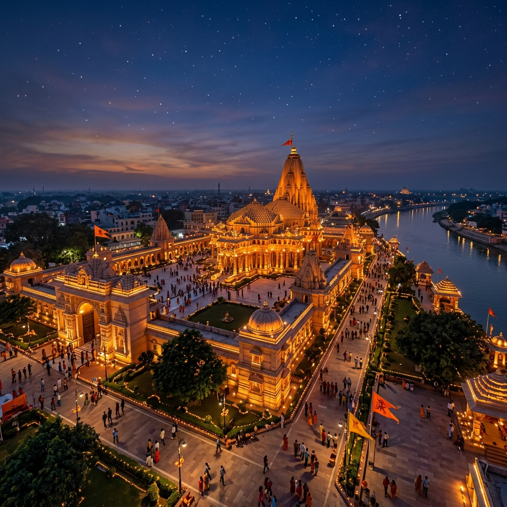

Feature Title
Detailed description will load here.
Dimension: N/A
Material: N/A
Witness the grand manifestation of Faith. The Ram Mandir stands as a monument of architectural genius and spiritual rebirth, crafted entirely out of pink sandstone without a single piece of iron.
A structural masterpiece designed in the ancient Māru-Gurjara style.

Timeless teachings of dharma and righteousness from the Shri Ramcharitmanas & Ramayana.
जो मंगल करने वाले और अमंगल (कष्टों) को दूर करने वाले हैं, वे श्री दशरथ नंदन श्री राम मेरे ऊपर कृपा करें।
May that home of auspiciousness and remover of inauspiciousness, Lord Rama (who plays in the courtyard of Dasharatha), shower His grace upon me.